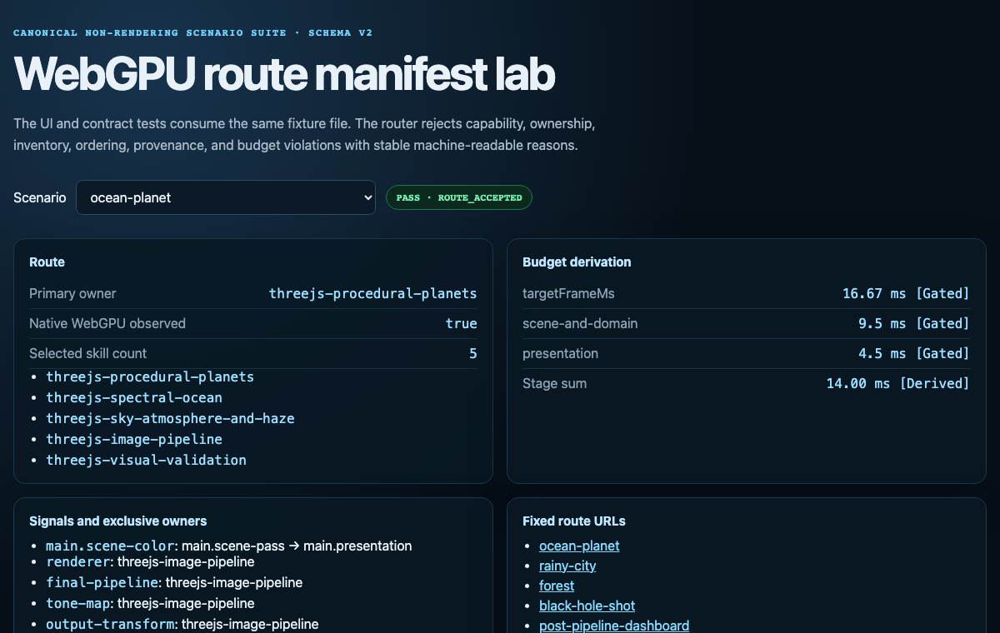

Primary implementation surface
These routes are generated from canonical source. Their exact status remains separate from implementation availability.

Choose the smallest expert skill set and the correct rendering architecture for general-purpose Three.js WebGPU/TSL work: scientific visualization, product/configurator scenes, architecture, cinematic art, digital twins, dense data scenes, and procedural worlds. Use when a request spans geometry, fields, materials, simulation, cross-skill physics coupling, scale, temporal effects, shared passes, final-image treatment, or sustained low-end/mobile performance.
These routes are generated from canonical source. Their exact status remains separate from implementation availability.
Routing is set-cover under a budget: given request features $R$ and skills with coverage sets $C_i$ and load costs $c_i$, choose the smallest set that covers the request:
$$\min_{S} \sum_{i \in S} c_i \quad \text{s.t.} \quad R \subseteq \bigcup_{i\in S} C_i$$The router also owns the composed frame-budget constraint — a tier assignment is feasible only if the per-skill budgets sum inside the frame:
$$\sum_{i \in scene} b_i(t_i) \le B_{frame} = \frac{1000}{f_{target}}\;\text{ms}$$Preflight is a contract, not advice: it names the selected skills, the signal owners (depth, tone map, output transform), and the tier assignment before any code is written — so composition conflicts surface at plan time instead of debug time.
Only schema-v2 labs with accepted runtime and evidence contracts appear here. Other source directories remain visible through the demo registry without being promoted to runnable proof.
Every image identifies what it proves. Page screenshots demonstrate the published presentation only; generated inputs demonstrate asset channels only; canonical acceptance still requires render-target readback and a schema-v2 bundle.
1 published imageThe complete SKILL.md as loaded by agents — verbatim, rendered.
This router targets the repository's [Gated] r185 architecture: WebGPURenderer
from three/webgpu, TSL from three/tsl, NodeMaterial families, node
RenderPipeline, and compute/storage only when the workload justifies them.
The installed package plus runtime THREE.REVISION are the revision gate;
verify lockfile coherence separately. Never infer API availability from the
router's version label.
Fallback for unavailable WebGPU is quarantined. If, and only if, the user asks
how to apply fallback when WebGPU is unavailable, route that teaching to
$threejs-compatibility-fallbacks after finding the canonical owner. Otherwise
retain the flagship route and report the unavailable WebGPU requirement as a
blocker. Never dilute destination skills with alternate-renderer branches.
Every quantitative claim, budget value, threshold, count, resolution, memory figure, timing, and example must carry one of these labels inline:
| Label | Meaning | Permitted use |
|---|---|---|
[Derived] |
Algebra from named inputs with units and the formula recorded. | Frame interval, attachment bytes, dispatch extent, or another reproducible calculation. |
[Gated] |
A capability, correctness invariant, product constraint, or acceptance bound. It is not a performance estimate. | Supported API/format, accuracy tolerance, memory ceiling, ownership invariant. |
[Measured] |
Captured on a named browser/device/GPU at named resolution, DPR, scene state, quality state, and sampling protocol. | Full-frame CPU/GPU distributions, pass timings, memory, thermal behavior. |
[Authored] |
An explicitly authored starting point or policy fixed before a run; it cannot prove acceptance. | Initial quality level, controller persistence, interaction reserve. |
Serialize reported values as { value, unit, label, source }. An unlabelled
numeric budget is unknown. Do not route or accept from it. A
published skill table is not [Measured] for the composed scene unless its
device, resolution, included work, and harness match.
Complete this before loading a destination skill:
WebGPURenderer, and record the actual backend. Record the
required release/backend/features [Gated] and the installed/runtime facts
[Measured]; verify their coherence.PhysicsContext, typed providers and ErrorPropagationLedger records,
an ordered multi-rate PhysicsGraph with exact
PhysicsCoordinationAdvanceRecord executions, explicit one-way/two-way
SurfaceExchange batches with dimensioned InteractionRecord source/reaction
ownership and exact InteractionApplicationLedger dispositions, atomic
PhysicsCommitTransaction records, one immutable
PhysicsPresentationCandidate, per-view camera/preparation publications, one
sealed snapshot and PresentationRenderPlan per selected target/view,
an append-only FrameExecutionRecord closing plan submission, reset results,
completion tokens, leases, and slot retirement,
an admitted QualityChangeRequest plus QualityTransition records for
physical quality changes, and an active
PhysicsCostLedger. A producer/consumer label alone is not an integration
contract.not used value.[Gated] frame, memory, visual-error, and update-latency bounds from
the product target. Define the measurement matrix before implementation.Use this compact record. Domain is context; the other axes select algorithms.
workloadProfile:
domain: scientific-visualization | product-configurator | architecture-aec | cinematic-art | digital-twin | data-scene | other
intent: explain | inspect | configure | coordinate | present | monitor
truthContract: metric | identity | physically-plausible | perceptual-style
representation: imported-hierarchy | procedural-mesh | points-glyphs | lines-graph | surface-field | volume-field | hybrid
interaction: fixed-view | orbit | free-navigation | direct-manipulation | multi-view
temporal: static | deterministic-animation | simulation | sparse-events | streamed-deltas | live-irregular-updates
scale: object | room | building | city-terrain | planetary | multiscale
topology: imported-unique | procedural-unique | repeated | streamed-changing
viewPattern: bounded | unconstrained | sectioned | overview-to-detail
residency: host-authoritative | gpu-resident | hybrid
uploadAndReadbackNeeds: []
deployment: []
authoredResolutionAndDpr: [] # numeric-evidence records
errorBounds: []
updateLatencyBound: { value: "", unit: ms, label: Gated, source: "product contract" }
| Domain | First protected property | Common routing error |
|---|---|---|
| Scientific visualization | Coordinate, topology, units, transfer function, uncertainty, and declared numerical error. | Trading metric truth for smooth temporal imagery or decorative post. |
| Product/configurator | Silhouette, variant identity, material response, color management, and predictable interaction. | Treating asset preparation as procedural geometry or hiding material errors with bloom/AO. |
| Architecture/AEC | Dimensions, section/occlusion semantics, spatial legibility, large-model culling, and stable navigation. | Loading procedural-building grammar for imported BIM/CAD or using a monolithic draw path. |
| Cinematic/art | Shot composition, motion language, authored lighting, temporal coherence, and final-image intent. | Starting with grading before silhouette, light transport, and emission exist. |
| Digital twin | Stable entity identity, update age, interpolation policy, spatial scale, and sustained operation. | Binding rendering directly to bursty data arrival or rebuilding immutable geometry per update. |
| Dense data scene | Mapping fidelity, glyph/point density, selection identity, occlusion policy, and overview-to-detail behavior. | Choosing a representation without accounting for projected density and interaction. |
causeLedger:
sourceOfTruth: ""
userQuestion: ""
primaryObservable: ""
truthOrStyleInvariant: ""
unitsAndCoordinateFrame: ""
missingDataAndUncertainty: ""
physicalOrDataCause: ""
earliestMissingLayer: topology | geometry | field | material | illumination | transport-volume | motion | camera-projection | image-transform
missingSignal: ""
candidateAlgorithms: []
selectedAlgorithm: ""
rejectedAlgorithms: []
rejectionEvidence: []
noPostBaseline: ""
postProcessingRejectedBecause: ""
primaryVisualContract: ""
errorMetric: ""
truthDebugView: ""
Select the earliest missing causal layer. A screen effect cannot repair wrong topology, an incorrect transfer function, missing shadows, a bad BRDF, or an unstable camera. Post-processing is eligible only when its source signal and no-post baseline are already proven.
| Decision | Select from evidence | Reject when |
|---|---|---|
| Imported, procedural, or hybrid subject | Preserve authoritative CAD/BIM/scientific/glTF data; generate only missing semantics or scalable detail. | A procedural replacement would violate identity, dimensions, topology, or measured data. |
| Local terrain/coast or planetary body | Use fields + semantic geometry for a local height/bathymetry domain; use the planet skill only when curvature, horizon, spherical continuity, or planet-scale precision is observable. | A cube-sphere/quadtree adds no visible contract, or a planar domain cannot satisfy the required horizon/precision error. |
| Geometry, displacement, material normal/parallax, or screen-space cue | Use geometry for silhouette, intersections, section cuts, cast shadows, and close parallax; use cheaper representations only when the view/error contract permits. | The representation cannot reproduce the observable it is supposed to cause. |
| Analytic, sampled-data, numerical simulation, or stochastic model | Match the required conservation law, controllability, uncertainty, and update cadence. | A more complex solver adds no observable contract or a shortcut violates the error bound. |
| Independent or coupled physical domains | Keep each domain's least-cost valid solver; exchange only typed, versioned signals and source/reaction records through an ordered graph. Represent recurrent/adaptive coupled work as exact PhysicsStageExecution records in one PhysicsCoordinationAdvanceRecord; use the graph-wide PhysicsCatchUpPolicy. |
Units, frame, clock, footprint, validity, error, latency, reaction ownership, application ledger, commit dependency, or synchronization is implicit; a universal state buffer/timestep or domain-local catch-up would waste work or double-step state. |
| CPU update, vertex/fragment evaluation, or compute/storage | Compare state volume, reuse across passes, synchronization, upload/readback, and target-device timings. | Compute merely moves small or rarely reused work behind dispatch and storage overhead. |
BatchedMesh, InstancedMesh, merged geometry, or chunked/streamed LOD |
Match geometry reuse, material compatibility, per-entity identity, transform/update frequency, culling granularity, and measured backend draw entries. | Batching destroys required culling/selection identity, dynamic updates rewrite excessive data, or the route makes the forbidden [Gated] assumption of one GPU draw per BatchedMesh family. |
| Minimal forward attachments or shared MRT | Enumerate downstream consumers and compare composed variants on the target GPU. | An attachment has no proven consumer or its store/read bandwidth exceeds saved geometry/pass work. |
| Spatial estimator, temporal estimator, or deterministic accumulation | Use temporal history only with valid motion/rejection data and a latency/ghosting contract. | Live data, disocclusion, transparency, or quantitative display makes history bias unacceptable. |
| Raster surface, impostor, point/glyph, or bounded ray march | Choose from projected size, topology, interior/volume requirement, depth ordering, and error tolerance. | The algorithm spends samples where the result is sub-pixel or loses required topology/opacity semantics. |
The route must name the losing alternatives and the evidence that rejected them. When target evidence does not distinguish candidates, retain an A/B prototype in the plan instead of asserting a winner.
Any screen-error argument for LOD, tessellation, impostors, field bands, or simulation extent follows the shared physical-pixel projected-error contract: unjittered projection, complete deformed support, nearest positive depth, per-view evaluation, hysteresis/dwell, and simultaneous transition memory.
Every route decision produces this shape:
backendManifest:
requiredReleaseBand: { value: "", unit: revision, label: Gated, source: "repository contract" }
installedPackageVersion: { value: "", unit: semver, label: Measured, source: "installed package" }
runtimeRevision: { value: "", unit: revision, label: Measured, source: "THREE.REVISION after import" }
requiredBackend: { value: WebGPU, unit: backend, label: Gated, source: "flagship route contract" }
actualBackend: { value: "", unit: backend, label: Measured, source: "initialized renderer" }
deviceBrowserGpu: { value: "", unit: identity, label: Measured, source: "target run" }
cssViewport: { value: "", unit: css-pixels, label: Measured, source: "target run" }
rendererDpr: { value: "", unit: ratio, label: Measured, source: "initialized renderer" }
physicalRenderExtent: { value: "", unit: physical-pixels, label: Derived, source: "CSS viewport and renderer DPR" }
compatibilityMode: { value: "", unit: boolean, label: Measured, source: "initialized backend" }
requestedSamples: { value: "", unit: samples-per-pixel, label: Authored, source: "render contract" }
actualRendererSamples: { value: "", unit: samples-per-pixel, label: Measured, source: "initialized renderer" }
maxColorAttachments: { value: "", unit: attachments, label: Measured, source: "initialized WebGPU device limits" }
maxColorAttachmentBytesPerSample: { value: "", unit: bytes-per-sample, label: Measured, source: "initialized WebGPU device limits" }
featureGates: []
apiProof: []
workloadProfile: {}
causeLedger: {}
selectedSkills: []
omittedSkills: []
primaryOwner: ""
deferredSkills: []
owners:
sourceOfTruth: ""
representation: ""
spatialFrame: ""
timebase: ""
semanticIds: ""
selectionPicking: ""
clipSection: ""
presentation: ""
validation: ""
requiredSignals:
sceneColorRegistry: {}
depthRegistry: {}
normalRegistry: {}
velocityRegistry: {}
objectIdRegistry: {}
historyRegistry: {}
domainSignals: {}
physicsContext: not used
physicsGraph: not used
physicsCoordinationAdvanceRecords: []
physicsCostLedger: not used
physicsSignals: {}
physicsErrorPropagationLedgers: {}
physicsInteractions: []
physicsInteractionApplicationLedgers: {}
physicsCommitTransactions: {}
physicsExternalSolverAdaptersById: {}
physicsQualityTransitions: []
physicsPresentationTimeCohortsById: {}
physicsPresentationCandidate: not used
physicsCameraViewPublicationsByTarget: {}
physicsViewPreparationPublicationsByTarget: {}
physicsPresentationSnapshotsByTarget: {}
physicsPresentationRenderPlansByTarget: {}
frameExecutionRecord: not used
# Deprecated compatibility projection. It never carries allocated state.
physicsPresentationSnapshot: not used
outputOwnersByPresentationTarget: {}
# Compatibility projection for existing route tooling; "not used" never allocates.
sharedResourceOwners:
gbuffer: ""
depth: ""
normal: ""
velocity: ""
history: ""
weatherEnvelope: ""
toneMap: ""
outputTransform: ""
adaptiveResolution: ""
performanceContract:
requestedRefresh: { value: "", unit: Hz, label: Authored, source: "product brief" }
actualDisplayRefresh: { value: "", unit: Hz, label: Measured, source: "target run" }
frozenTargetRefresh: { value: "", unit: Hz, label: Gated, source: "accepted target envelope" }
frameInterval: { value: "", unit: ms, label: Derived, source: "1000 ms / frozenTargetRefresh" }
cpuP95Budget: { value: "", unit: ms, label: Gated, source: "derived CPU envelope" }
gpuP95Budget: { value: "", unit: ms, label: Gated, source: "derived GPU envelope" }
presentedP95Budget: { value: "", unit: ms, label: Gated, source: "presentation contract" }
peakLiveMemoryBudget: { value: "", unit: bytes, label: Gated, source: "target memory contract" }
cpuEnvelopeInputs: [] # numeric-evidence records
gpuEnvelopeInputs: [] # numeric-evidence records
interactionReserve: { value: "", unit: ms, label: Authored, source: "planning only; never acceptance" }
errorBounds: []
aggregationPolicy:
basis: composed-full-frame-plus-paired-sample-marginals
acceptance: measured-composed-frame
forbidden: [standalone-total-addition, subsystem-percentile-addition, fixed-time-overhead]
drawAccounting:
source: renderer-info-plus-backend-trace
batchedMeshModel: backend-multidraw-entries-measured
forbiddenAssumption: single-gpu-draw-per-batchedmesh-material-family
mrtDecision:
status: not-used | candidate | accepted
attachments: []
consumerProof: []
targetABEvidence: []
tileGpuEvidence: []
costRecords: []
passKeys: []
passLedger: []
qualityLadder: []
skillTierCrosswalk: {} # selected skill local tier -> Full/Budgeted/Minimum viable
qualityController: {}
physicsCostEvidence: # required when the route has a PhysicsGraph
harnessId: ""
gateSetId: ""
costLedgerId: ""
opportunityTableId: ""
composedTraceId: ""
worstPermittedCatchUpCostId: ""
qualityCostEvidenceRefs: []
routeStatus: provisional | measured-valid | invalid | unmeasurable
coverageStatus: complete | partial | blocked
acceptanceEvidence:
requiredDebugViews: []
requiredMetrics: []
requiredCommands: []
requiredArtifacts: []
selectedSkills is the smallest set that authors the requested causes.
primaryOwner owns the earliest non-post missing layer. omittedSkills records
tempting but unnecessary routes and their rejection reason. deferredSkills
cannot be loaded until their source signal is proven. owners separates
authoritative source/data, render representation, spatial/time/identity policy,
presentation, and validation. requiredSignals describes actual allocation:
an owner does not imply a depth, normal, velocity, ID, history, or MRT output.
Every signal in a recipe has a producer and consumers or not used.
When any selected domain consumes another domain's physical state, every
declared physics... field plus frameExecutionRecord is mandatory and follows the
shared ABI.
Every PhysicsSampleResponseEnvelope.errorPropagationLedgerRef resolves to
exactly one ErrorPropagationLedger in physicsErrorPropagationLedgers.
Every InteractionBatchLedger.exactOnceApplicationLedgerVersion resolves to
one InteractionApplicationLedger in
physicsInteractionApplicationLedgers. Every PhysicsDependencyRef used by a
stage execution, commit, candidate, PresentationRenderPlan, or frame execution
resolves to the exact record and version in the route inventories; unresolved
or stale references block publication.
physicsExternalSolverAdaptersById is the route-owned authoritative adapter
inventory. Key each active value by its exact ExternalSolverAdapter.adapterId
and emit the complete canonical record at that key; use {} when the route has
no external solver. A singular externalSolverAdapter block in a recipe is a
nonserialized explanatory sketch only and never substitutes for this mapping.
An admitted physical quality change that replaces an adapter boundary,
transport, residency, capability, clock map, or owned equation keeps the old
adapter resources and authority live through the transition's simulation,
coupling, external, and presentation completion join. Remove the old inventory
entry only after QualityTransition.retireAfterCompletion.retirementEvidence
closes that join; rejection or rollback leaves the prior keyed record active.
Every Candidate, frame-cohort admission, and render plan resolves its
timeCohortId to one immutable PresentationTimeCohort in
physicsPresentationTimeCohortsById; a target/view with different requested
previous/current instants uses another cohort rather than mutating or sharing
the wrong Candidate.
domainSignals remains a routing index; every physical entry points to a
PhysicsSignalDescriptor rather than redefining units, clocks, validity, or
errors locally. Missing channels are absent and can block a consumer; they are
never implicit zero. External solvers use the same boundary contract without
ceding their internal representation or timestep.
Represent every recurrent or adaptive coupled advance as exact
PhysicsStageExecution records in one PhysicsCoordinationAdvanceRecord.
Only the graph-wide PhysicsCatchUpPolicy may catch up, drop, or discontinue a
physical interval; domain-local render-loop recurrence and catch-up are invalid.
sharedResourceOwners is retained as a compatibility projection for existing
route tooling. It mirrors actual requiredSignals, domainSignals, and
outputOwnersByPresentationTarget; assigning a name there never authorizes allocation. history
names the coordinator, while keyed histories remain separate by semantic signal,
view, encoding, resolution, jitter, cadence, and reset policy.
Signal and output registries are keyed by view/presentation target. Depth,
velocity, histories, and output conversion from different cameras, layers,
jitter, time samples, or canvases are not shareable merely because their field
names match.
| Checkpoint | Required output |
|---|---|
| backend manifest | Installed revision, initialized backend, browser/device/GPU, output buffer type, feature gates, and blocker. |
| workload profile | Classification axes, truth contract, target views, data/update behavior, and error bounds. |
| cause ledger | Earliest missing layer, candidate algorithms, selected algorithm, rejected alternatives, and no-post contract. |
| physics contract | For interacting physical domains: context, typed signals/error ledgers, exact graph executions, interactions/application ledgers, commit transactions/dependencies, material/proxy IDs, snapshot/render plan, quality transitions, and blockers. |
| route manifest | Selected/omitted/deferred skills, causal/data/render owners, allocated signals, API proof, and acceptance evidence. |
| performance contract | Evidence-labelled budgets, cost scopes, unique-pass ledger, quality ladder, and controller. |
| diagnostics | No-post baseline and every field, buffer, pass, and identity view needed to prove the mechanism. |
| assertion | Executable test, source grep, capture, or evidence-bundle check for each gate. |
import * as THREE from 'three/webgpu';
const renderer = new THREE.WebGPURenderer( {
antialias: false
} );
await renderer.init();
const capabilities = {
revision: THREE.REVISION,
webgpu: renderer.backend.isWebGPUBackend === true,
outputBufferType: renderer.getOutputBufferType(),
actualSamples: renderer.samples,
compatibilityMode: renderer.backend.compatibilityMode,
deviceLimits: renderer.backend.device?.limits ?? null,
rendererInfo: renderer.info
};
if ( capabilities.webgpu !== true ) {
throw new Error(
'Canonical flagship route requires WebGPU; route fallback teaching only when explicitly requested.'
);
}
Legacy WebGL implementation: none in this router folder.
[Gated] in this section means verify against the installed revision and target
backend before coding.
WebGPURenderer, TSL, and the appropriate node-material
family. Do not mix a legacy post or material path into the flagship graph.RenderPipeline, pass(), mrt(), renderOutput(), and
PassNode.setResolutionScale() where proven. Plan producers, consumers,
formats, resolutions, lifetimes, and history invalidation before effects.
Configure MRT and request every consumed MRT/pass output before
await scenePass.compileAsync( renderer ). renderPipeline.render() owns
animation-loop presentation; deprecated renderAsync() is not a route.
After changing outputNode or outputColorTransform, set
renderPipeline.needsUpdate = true.renderer.compute() or renderer.computeAsync() with
installed TSL storage APIs only when the algorithm-selection gate justifies
dense GPU-resident generation/reduction, persistent state, or cross-pass
reuse. Record dispatch extent [Derived];
validate synchronization and bounds [Gated]. After initialization,
computeAsync() is not a GPU-completion fence. Workgroup/storage barriers do
not provide global cross-workgroup ordering; use dispatch/pass boundaries and
ping-pong state for global dependencies.GTAONode, BloomNode, TRAANode, TAAUNode,
DepthOfFieldNode, and sky/fog nodes when they implement the required
mechanism. Start shadows from ordinary light shadows; use CSMShadowNode or
TileShadowNode only when their coverage/error contract and measured cost
justify them. TileShadowNode tiles shadow coverage; it is not a tile-GPU
performance primitive. Replace built-ins only with evidence.
In the [Gated] installed revision, gate TAAU on disabled MSAA and the
required lower-resolution beauty/depth/velocity inputs; gate
TileShadowNode away from VSM.[Measured] per target.
[Gated] in installed r185, BatchedMesh does not prove a single GPU draw per
material family: the WebGPU backend submits and updates renderer info per
_multiDrawCount entry. Use it for compatible state/scene management,
per-object culling, and replacement; measure backend draw entries instead of
budgeting a family as one draw.[Gated] a single controller owns DPR and subsystem tiers.
Each subsystem exposes monotonic quality states and its visual/error
consequences.
Record renderer DPR and every pass resolution scale separately because their
physical extents compose. A scale/attachment transition updates texel
uniforms, jitter, velocity, and history allocation/reset atomically.| API | [Gated] proof target |
|---|---|
WebGPURenderer, RenderPipeline |
three/webgpu; installed source/export map |
pass, mrt, renderOutput |
three/tsl; installed source/export map |
Default GTAONode; named ao factory |
three/addons/tsl/display/GTAONode.js |
Default BloomNode; named bloom factory |
three/addons/tsl/display/BloomNode.js |
Default TRAANode; named traa factory |
three/addons/tsl/display/TRAANode.js |
Default TAAUNode; named taau factory |
three/addons/tsl/display/TAAUNode.js; verify scene-pass/sample constraints |
Default DepthOfFieldNode; named dof factory |
three/addons/tsl/display/DepthOfFieldNode.js |
Named CSMShadowNode class export |
three/addons/csm/CSMShadowNode.js |
Named TileShadowNode class export |
three/addons/tsl/shadows/TileShadowNode.js |
PassNode.setResolutionScale() |
Installed PassNode source |
Record exact file/export proof in the manifest. A nearby release example is not proof for the installed package.
Every implementation defines canonical WebGPU tiers; no alternate renderer is a tier.
| Tier | Contract |
|---|---|
| Full | Highest authored fidelity that passes [Gated] truth/error and [Measured] sustained budgets. |
| Budgeted | Same architecture with reduced resolution, samples, march extent, simulation density, LOD, update cadence, or optional passes selected from the measured bottleneck. |
| Minimum viable | Cheapest WebGPU path that preserves the declared primary observable and hard correctness/error bounds. |
For scientific visualization, AEC, digital twins, and data scenes, quality
adaptation must not silently alter values, transfer-function semantics, stable
IDs, topology, dimensions, or uncertainty. If a lower tier changes such a
quantity, expose the tier and its [Gated] error bound to the user.
The route manifest maps every selected skill's local tier vocabulary into
Full, Budgeted, or Minimum viable in
performanceContract.skillTierCrosswalk. A route transition names both the
route tier and every affected local tier; matching names are not assumed to
mean matching equations, costs, or errors.
Do not use universal desktop/mobile pass, draw, triangle, or memory budgets. Build a target matrix from the product brief and representative hardware:
[Derived] frameIntervalMs = 1000 ms / targetRefreshHz
[Derived] cpuSceneEnvelopeMs = frameIntervalMs - measuredMainThreadReserveMs - authoredCpuSafetyReserveMs
[Derived] gpuSceneEnvelopeMs = frameIntervalMs - measuredCompositorGpuReserveMs - authoredGpuSafetyReserveMs
targetRefreshHz is [Gated]; reserves are [Measured] under the target host
shell or explicitly provisional [Authored] starting points. Freeze separate
[Gated] CPU/GPU tail-latency limits from the derived envelopes. CPU and GPU
stages can overlap, so never add their durations unless a measured dependency
serializes them. Memory, upload, update latency, presentation cadence, and
deadline misses remain separate gates. End-to-end acceptance uses the composed
frame, not independent skill tables.
Every cost record declares exactly one scope:
| Scope | Meaning | Can be added? |
|---|---|---|
full-frame |
Entire composed frame under the stated harness. | No; it is the acceptance result. |
marginal-feature |
Paired feature-on minus feature-off cost in the same composed harness. | Only provisionally with compatible measurements and unique pass/resource work. |
unique-pass |
Timestamped pass/dispatch that appears once in the pass ledger. | Only once; overlapping queues and bandwidth interactions still require full-frame validation. |
memory |
Resident or transient bytes with lifetime and format. | Add unique allocations whose lifetimes overlap; do not convert bytes to time. |
standalone-total |
Total from a skill demo or isolated fixture. | Never add to another total; use only to select what to measure. |
unknown |
Missing includes/excludes, harness, or numeric-evidence label/source. | No. |
costRecord:
id: ""
scope: full-frame | marginal-feature | unique-pass | memory | standalone-total | unknown
deviceBrowserGpu: { value: "", unit: identity, label: Measured, source: "benchmark profile" }
cssViewport: { value: "", unit: css-pixels, label: Measured, source: "benchmark profile" }
rendererDpr: { value: "", unit: ratio, label: Measured, source: "benchmark profile" }
renderExtent: { value: "", unit: physical-pixels, label: Derived, source: "CSS viewport and renderer DPR" }
qualityState: ""
sceneStateAndSeed: ""
includes: []
excludes: []
passKeys: []
cpuP50: { value: "", unit: ms, label: Measured, source: "benchmark trace" }
cpuP95: { value: "", unit: ms, label: Measured, source: "benchmark trace" }
gpuP50: { value: "", unit: ms, label: Measured, source: "GPU timestamp trace" }
gpuP95: { value: "", unit: ms, label: Measured, source: "GPU timestamp trace" }
presentedP50: { value: "", unit: ms, label: Measured, source: "presentation trace" }
presentedP95: { value: "", unit: ms, label: Measured, source: "presentation trace" }
bytes: { value: "", unit: bytes, label: Derived, source: "logical allocation ledger" }
method: ""
Every populated percentile field is [Measured]. A range maximum from a
standalone destination skill remains standalone-total; relabeling it
marginal-feature is forbidden.
Delete the old additive-maxima rule and fixed composition overhead. It double-counted scene passes/post work and mixed standalone totals with subsystem marginals. Base scene traversal, present, upsample, tone map, and shared buffers are measured or derived from the unique pass ledger; none receives an invented fixed time.
For planning only:
[Derived] T_plan,k = T_base,k + sum(deltaT_unique,compatible,k) + R_interaction,k
[Derived] Q_plan,p = quantile over k of T_plan,k
T_base,k is a [Measured] composed-baseline frame sample with the shared scene/present
architecture enabled.deltaT...k is [Measured] paired marginal work from the same target,
resolution, seed/path, and quality context, and its pass keys are unique.R_interaction,k is an [Authored] starting-point allowance for unmeasured
cache, queue, bandwidth, scheduling, and coupling effects. It is replaced by
composed measurement, not tuned to make the route pass.If compatible samplewise traces are unavailable, do not manufacture a numeric aggregate from skill rows; keep the route qualitative and provisional.
This estimate is not an acceptance proof: percentile sums are not the
percentile of a sum, GPU work can overlap, and added attachments can change the
cost of existing passes. A route is performance-valid only when the final
composition satisfies [Measured] CPU and GPU p50/p95, memory, latency, and
sustained-state gates on the target matrix.
For a feature (s) added to composed graph (G), pair contemporaneous frame samples:
[Derived] deltaT_s|G,k = T_k(G with s) - T_k(G without s)
Report [Measured] p50/p95 of the paired differences. Never subtract two
independently sampled percentiles: quantiles are not additive and their tails
may occur on different frames. If GPU timestamps are unsupported, mark GPU
timing unmeasurable; CPU or presentation timing cannot be relabelled as GPU
evidence.
Build the union of pass keys, never concatenate skill-local pass lists:
passRecord:
key: "stable semantic producer key"
runtimeRole: exclusive | shared | validation-only | compile-time-only
accountingOwner: ""
viewScope:
scene: ""
camera: ""
view: ""
layers: ""
jitter: ""
timeSample: { value: "", unit: seconds, label: Authored, source: "reproducible input path" }
producer: ""
consumers: []
kind: cpu-update | upload | render | compute | copy | resolve | present
clockId: not used
cadence: not used
substepMultiplicity: not used
executionsPerPresentedFrame: not used
inputs: []
outputs: []
resolution: { value: "", unit: physical-pixels, label: Derived, source: "canvas, DPR, pass scale" }
formats: []
sampleCount: { value: "", unit: samples-per-pixel, label: Measured, source: "configured pass after backend normalization" }
loadStoreResolve: []
lifetime: ""
hotBytesPerExecution: not used
sourceReactionOrConservationGroups: []
timing:
p50: { value: "", unit: ms, label: Measured, source: "GPU timestamp trace" }
p95: { value: "", unit: ms, label: Measured, source: "GPU timestamp trace" }
Skills are ownership/algorithm documents, not timing buckets. Mark validation and compilation work explicitly; it contributes to validation/startup evidence, not steady-frame cost. Shared work has one accounting owner and any number of consumers.
If AO, temporal reconstruction, outlines, and grading consume the same scene
depth/normal/velocity, their owners reference the same producer. Tone mapping,
output conversion, history update, and upsample are likewise unique semantic
producers. A consumer that needs another encoding or resolution must declare a
conversion pass and its bytes; name reuse is not deduplication.
Physics stages additionally declare state epochs, barriers, subcycling, hot
traffic, and conservation side effects. Do not infer solver order from the
render-pass list. For each presentation opportunity, serialize one exact
PhysicsCostOpportunityRow whose stage/subcycle/loop/interaction/work/traffic
counts close to CadenceTraceTotals and whose CPU, GPU, external, and
presentation spans follow concrete dependency paths. A raw-trace reference or digest
without loadable digest-checked rows cannot prove co-occurrence.
The graph-wide catch-up contract is multi-objective. Build the integer feasible set from graph activation/partition/loop constraints and both catch-up maxima; then prove a componentwise dominating frontier for CPU critical path, GPU critical path, external tail, presentation interval, traffic, live memory, migration overlap, and numerical/visual error. Repeat executable frontier witnesses under the sustained target harness. One convenient zero-debt trace, one scalar "worst frame," stage-percentile addition, or domain-local clipping is invalid. Every quality state needs matching steady and catch-up evidence; every quality transition needs separate prepare/populate/commit/retire cost evidence through source-generation retirement.
When present, bind three workload-shape ledgers into the same opportunity rows:
PhysicsSparseActiveDomainCost covers detection, scan/sort, compaction,
capacity/indirect arguments, halo/neighbors, solve, hysteresis, inactive-model
error, and overflow; PhysicsContactCost covers broadphase pairs, narrowphase,
manifolds, islands, constraint rows/iterations, warm starts/cache, deterministic
reduction, and stress tails; PhysicsExternalAdapterCost covers batching,
serialization/conversion, queue/transport/ownership/fence dependencies, remote
solve attribution, retries/exact-once, in-flight memory, clock mapping, and
failure recovery. Counting only active solver elements, average contacts, or
remote compute time is incomplete.
MRT saves work only when its consumers justify the attachments. For each
attachment j, compute logical uncompressed payloads from labelled inputs:
[Derived] logicalSamplePayload_j = width_j * height_j * backendSampleCount_j * bytesPerTexel_j * liveSlots_j
[Derived] logicalResolvedPayload_j = width_j * height_j * bytesPerTexel_j * resolvedStoresPerFrame_j
Every operand is a { value, unit, label, source } record; the products are
[Derived] records citing those operands.
These are representation estimates, not physical allocation or external-memory
traffic floors. Record requested samples, actual renderer/pass samples,
backend-normalized samples, MSAA storage, resolve targets, depth/stencil,
history copies, texture reads, load/store actions, and concurrent lifetimes
separately. Row alignment applies to explicit copies/readback, not generic render
target traffic. Compression, tile residency/spills, implementation allocation,
and external traffic are [Gated] or [Measured] properties.
On a tile-based GPU, an attachment consumed after its render pass may require
off-chip store/resolve traffic; a wide G-buffer can therefore lose against a
minimal forward path even when it removes a geometry pass. Keep attachment
count/formats minimal, avoid unconsumed outputs, and A/B the minimal-forward and
shared-MRT compositions on representative mobile hardware. Select from
[Measured] full-frame p50/p95, attachment traffic/counters when available,
transient memory, and thermal behavior—not desktop intuition.
Do not infer auxiliary MRT formats from getOutputBufferType(): prove each
attachment's type, format, packing, and consumer encoding before compile. Query
the initialized device's color-attachment count and per-sample byte limits. For
mobile AO, A/B depth reconstruction against a stored normal attachment. Bloom
does not justify emissive MRT unless selective emission is required.
[Measured] full-frame CPU p50/p95, presentation p50/p95, and GPU
p50/p95 whenever GPU performance is a gate. If required GPU timing is
unavailable, performance status is unmeasurable, not passing. Also capture
dropped/deferred-frame behavior and pass/dispatch timings,
uploads, explicit allocation ledgers, render-target logical payloads, and live
storage. Treat renderer.info as engine counters/logical estimates with known
exclusions, not measured VRAM or external traffic. Record hardware counters,
residency, power, clocks, and thermal state only when exposed; otherwise mark
them unavailable and rely on sustained timing/cadence/quality drift.unmeasurable, not passing.Every adaptive route records the controller, never just adaptive DPR:
qualityController:
observedSignals: [cpuP50, cpuP95, gpuP50, gpuP95, presentedP50, presentedP95, droppedFrames, memoryPressure, thermalState]
samplingWindow: { value: "", unit: frames-or-time, label: Authored, source: "controller policy" }
downgradePredicate: { value: "p95 exceeds its Gated budget for persistent windows", unit: predicate, label: Gated, source: "performance contract" }
upgradePredicate: { value: "p50 and p95 remain below lower recovery gates for longer persistence", unit: predicate, label: Gated, source: "performance contract" }
headroom: { value: "", unit: budget-fraction-or-ms, label: Authored, source: "controller policy" }
downgradePersistence: { value: "", unit: windows, label: Authored, source: "controller policy" }
upgradePersistence: { value: "", unit: windows, label: Authored, source: "controller policy" }
cooldown: { value: "", unit: windows, label: Authored, source: "controller policy" }
bottleneckClassifier: ""
qualityLadder: []
protectedInvariants: []
[Gated] controller invariants: upgrade persistence is stricter than downgrade
persistence; upgrade has positive headroom; a cooldown follows a transition;
the controller applies one independently valid transition transaction, observes
the settled result, then reclassifies pressure. A transaction may atomically
change coupled state such as scene scale, TAAU, velocity, and history, or remove
an attachment while enabling its reconstruction path. Quantize scale/tier
transitions; frequent DPR or pass-scale changes can trigger target reallocation.
Each transition declares history reset/resample, settling, lifecycle, and
dispose ownership. These inequalities create hysteresis without inventing
device-independent thresholds.
Every physical quality change—including cadence, discretization, state, filter,
identity, residency, or coupling—must use a QualityTransition that declares
state projection/reset, provider-version publication, conservation correction
or residual, simultaneous residency, and consumer invalidation. A render
governor may request the transition but cannot mutate physical state directly.
Changing solver class to meet a budget is a new truth contract, not a tier.
Choose the downgrade axis from the measured bottleneck:
| Pressure | First candidate controls |
|---|---|
| Fragment/fill or render-target bandwidth | DPR, pass scale, attachment count/format, overdraw, shadow/volume resolution. |
| Compute | Solver grid, march/sample count, dispatch cadence, spatial extent. |
| CPU submit/traversal | Culling granularity, batching/instancing, visible population, update scheduling. |
| Upload/live updates | Dirty-range compaction, persistent GPU state, interpolation, update cadence. |
| Memory | History length, simultaneous targets, attachment formats, transient lifetimes, LOD residency. |
| Temporal instability | History weight/rejection, jitter policy, or replacement with a spatial estimator; do not lower spatial truth first. |
Enumerate the live threejs-* skills before composing a route and intersect it
with this repository roster:
threejs-ambient-contact-shadingthreejs-black-holes-and-space-effectsthreejs-bloomthreejs-camera-controls-and-rigsthreejs-choose-skillsthreejs-compatibility-fallbacksthreejs-debuggingthreejs-dynamic-surface-effectsthreejs-exposure-color-gradingthreejs-image-pipelinethreejs-particles-trails-and-effectsthreejs-procedural-buildings-and-citiesthreejs-procedural-creaturesthreejs-procedural-fieldsthreejs-procedural-geometrythreejs-procedural-materialsthreejs-procedural-motion-systemsthreejs-procedural-planetsthreejs-procedural-vegetationthreejs-rain-snow-and-wet-surfacesthreejs-scalable-real-time-shadowsthreejs-sky-atmosphere-and-hazethreejs-spectral-oceanthreejs-visual-validationthreejs-volumetric-cloudsthreejs-water-opticsRoute only to the intersection. Record divergence in the manifest. If a causal owner is absent, block that part or reduce scope; never invent a renamed owner.
| Required result | Load | Tie-breaker |
|---|---|---|
| Unexpected Three.js runtime/API behavior, documentation/source disagreement, suspected regression, known-issue research, or upgrade triage | $threejs-debugging |
Load for local diagnosis and upstream/version proof. Add domain skills only when mechanism expertise is required; do not load debugging for ordinary scene design. |
| Camera composition, orbit/free navigation, multi-scale framing, projection/depth ownership, handoffs, floating origins | $threejs-camera-controls-and-rigs |
Load when camera policy changes scale, silhouette, precision, temporal validity, or interaction. |
| Authored transform phases, kinematics, rotating frames, springs, staging, analytic motion | $threejs-procedural-motion-systems |
Use for transform authorship; keep live-data interpolation in the application data layer unless procedural motion is the missing cause. |
| Interacting water, bodies, weather, vegetation, particles, terrain, or external physics | $threejs-choose-skills plus the smallest domain owners |
Instantiate the shared physics ABI and ordered graph first; do not invent pairwise adapters inside render callbacks. |
| Reusable scalar/vector fields, causal masks, domain warping, derived normals | $threejs-procedural-fields |
Use when outputs share a field cause; external scientific/data ingestion remains outside the pack. |
| Local terrain, islands, beaches, cliffs, seabed, and coastline semantics | $threejs-procedural-fields + $threejs-procedural-geometry + $threejs-procedural-materials |
Fields own the common land/bathymetry cause, geometry owns silhouette/topology/material groups, and materials consume the same semantic bundle. Add water only when a water surface or transport is visible. |
| BRDF/material identity, filtered atlases, frame fields, surface masks, emissive/thermal appearance, specular AA | $threejs-procedural-materials |
Pair with fields for shared causes and geometry for silhouette/section changes. |
| Semantic mesh writers, profiles, rails/frames, generated glyphs, material groups | $threejs-procedural-geometry |
Use when vertices, indices, normals, UVs, groups, or generated topology are owned here; not for generic CAD/glTF optimization. |
| Trees, grass, roots, canopies, rooted wind, biological distribution | $threejs-procedural-vegetation |
Use for plant growth/distribution/deformation, including architectural and scientific contexts. |
| Procedural fauna/organisms, generated bodies, rigs, locomotion, variation, crowds | $threejs-procedural-creatures |
Imported skinned-asset pipelines remain a declared gap. |
| Procedural buildings, facade/roof grammars, profiles, ornaments, city kits | $threejs-procedural-buildings-and-cities |
Imported BIM/AEC review is not procedural-building ownership. |
| Planetary bodies, terrain, craters, biomes, coastlines, spherical LOD | $threejs-procedural-planets |
Pair with atmosphere only after body scale/horizon and precision policy are fixed. |
| Sky scattering, atmospheric shells, aerial perspective, haze | $threejs-sky-atmosphere-and-haze |
Use image pipeline only for final exposure/color ownership. |
| Weather-driven volumetric clouds and cloud shadows | $threejs-volumetric-clouds |
Consume the project/environment coordinator's EnvironmentForcingSnapshot; own volumetric density/transport and, only with causal microphysics, PrecipitationEmissionSnapshot, never general meteorology. Generic scientific volume rendering remains a gap. |
| Horizon-scale, statistically specified directional sea over multiple wavelength decades | $threejs-spectral-ocean |
Keep periodic homogeneous FFT synthesis in deep/open water; hand coastal bathymetry, run-up, and wet/dry behavior to the coastal-water contract. |
| Bounded/analytic/coastal water, local heightfields, shoreline transformation, object ripples, caustics, refraction/absorption | $threejs-water-optics |
Select the least complex solver that reproduces the required shoreline observable; use screen-history surfaces only for screen-anchored effects. |
| Rain/snow transport, receiver accumulation, surface wetness, puddles, and splashes | $threejs-rain-snow-and-wet-surfaces |
Consume EnvironmentForcingSnapshot from the project/environment coordinator. Own only precipitation transport/deposition, receiver accumulation, puddles, and splashes; never synthesize meteorological state. Route optical water coupling only when refraction/caustics are causal. |
| Curved-ray black holes, accretion disks, wormholes | $threejs-black-holes-and-space-effects |
Exposure/bloom are consumers after the HDR transport signal is correct. |
| Particles, trails, plasma, shockwaves, transient event layers | $threejs-particles-trails-and-effects |
Route object transforms to motion systems; preserve stable data identity in data/digital-twin scenes. |
| Accumulated screen frost, touch clearing, reduced blur, history/refraction masks | $threejs-dynamic-surface-effects |
Use only for screen-space history surfaces, not world/object-anchored weather. |
| Dynamic/large-scene shadows, cascades, tiled coverage, cached updates | $threejs-scalable-real-time-shadows |
Start from ordinary light shadows; choose CSM/tiled coverage/custom caching only from coverage error, invalidation, and measured cost. |
| GTAO, bent normals, bilateral reconstruction | $threejs-ambient-contact-shading |
Route through the shared depth/normal owner; reject AO when it obscures quantitative color or identity. |
| HDR bloom/selective emission | $threejs-bloom |
Prove HDR emission and exposure policy first. |
| Exposure adaptation, tone map, LUT grading, output color | $threejs-exposure-color-grading |
Scientific/data displays may require a fixed transfer function instead of eye adaptation. |
| Shared depth/normal/velocity/ID, MRT, history, pass ordering, final presentation | $threejs-image-pipeline |
Plan early only when sharing exists; load for final assembly after the no-post baseline. For physical routes, bind the sealed snapshot, exact resources, leases, pass dependencies, histories, and output owner through PresentationRenderPlan. |
| Fixed-view/trajectory evidence, seed/data sweeps, temporal stability, budgets, regression artifacts | $threejs-visual-validation |
Required for ambitious compute, temporal, adaptive, quantitative, or sustained-performance work. |
See references/router-recipes.md for general-purpose domain routes.
For a local archipelago, the default primary owner is procedural fields, not
planets or water. One deterministic field bundle must provide land support,
elevation, bathymetry, coast distance/frame, slope/exposure, material regions,
and placement validity. Geometry, materials, vegetation, structures, and water
consume that bundle; none may regenerate a private coastline. Spectral ocean is
optional and owns only the deep/open-water incident sea. The detailed route and
fixed-view evidence contract live in the stylized archipelago / coastal scene
recipe.
[Gated]/[Derived], not aesthetic
defaults.[Gated] exclusive choice: either provide a scene-linear
outputNode with renderPipeline.outputColorTransform = true, or use an
explicit renderOutput() node with outputColorTransform = false. After
changing the node or flag, set renderPipeline.needsUpdate = true.
Materials/effects must not double-convert.PhysicsContext, signal/error
inventories, exact PhysicsGraph executions and graph-wide catch-up,
source/reaction/application-ledger ownership, commit dependencies,
presentation interpolation/render plans, and QualityTransition admission.Every handoff labels:
| Interface | Required contract |
|---|---|
| source space | Object/local/growth/field/simulation/data coordinates and units. |
| world space | Three.js Y-up world units, georeference, handedness, and floating-origin offset. |
| view space | Camera convention and normal/vector encoding. |
| clip/NDC | Projection, jitter, depth range, viewport, and screen-origin owners. |
| UV/texel | Origin, wrap, texel-center convention, physical pixel size, DPR, and pass scale. |
| time | Clock, sample timestamp, interpolation/extrapolation, update age, and reset policy. |
| identity | Stable object/data ID, visibility/picking semantics, and remap owner. |
| depth | Standard/reversed/logarithmic/orthographic/MSAA-resolve convention. |
| color/data | Source encoding, scene-linear HDR, transfer function, tone-mapped/display domain, or no-color data. |
| owner boundary | Producer, permitted consumers, update cadence, lifetime, and invalidation rule. |
For physical handoffs these labels are serialized, not prose. Use
PhysicsSignalDescriptor, InteractionRecord, PhysicsPresentationCandidate,
and per-target/view PhysicsPresentationSnapshot
from the physics contract,
including footprint/filtering, validity, typed error, latency, origin epoch,
state version, and residency.
| Request area | Decision |
|---|---|
| glTF/CAD/BIM/scientific asset ingestion and optimization | Use official Three.js/domain tooling for KTX2, Meshopt, DRACO, LOD, compression, and source-data validation; do not assign procedural ownership. |
| General lighting design, studio IBL/PMREM, reflection probes, cube capture | Declare missing expert coverage and use official Three.js lighting/environment guidance; materials, shadows, and image pipeline are consumers, not illumination owners. |
| Generic volume rendering, point-cloud/octree streaming, graph layout, or tensor visualization | Declare missing expert coverage; use official/domain sources and route only shared Three.js rendering concerns here. |
| Live-data transport, databases, telemetry schemas, interpolation service | Keep in the application/data layer; route the resulting render state, fields, and validation only. |
| Picking, selection, annotation, DOM UI, accessibility | Keep application/UI ownership outside the flagship pack; image pipeline owns only graphics-safe compositing/output. |
| WebXR | Use official WebXR/Three.js guidance unless a dedicated skill exists. |
| Deployment/editor/tooling | Use platform and project conventions. |
| Physics engines | Keep the selected engine/domain solver authoritative internally, but require its adapter to publish the shared PhysicsContext, typed provider/state epochs, interactions, and PhysicsPresentationSnapshot; unsupported channels remain explicit blockers. |
Meteorological-state synthesis and EnvironmentForcingSnapshot production |
No current skill synthesizes meteorological state. Require a supplied project/environment coordinator or a dedicated environment-forcing capability; block dependent weather coupling when neither exists. Clouds, rain, water, vegetation, and particles are consumers, not substitute owners. |
| General authored prop libraries, mesh repair, UV unwrapping, texture baking, compression, and source-asset LOD production | Treat these as an explicit asset-pipeline input. Procedural skills may define anchors, variants, and runtime compilation, but they do not make an unvalidated source asset production-ready. |
| Generic app architecture | Keep framework/state/router decisions outside visual skills. |
| Teaching fallback when WebGPU is unavailable | Use $threejs-compatibility-fallbacks only for an explicit fallback-teaching request. |
$threejs-debugging
owns failure isolation and upstream fix/version proof; destination skills own
domain algorithms.A routed implementation is incomplete without:
[Gated], installed/runtime facts
[Measured], coherence proof, and target-device matrix;PhysicsContext, typed
signal/provider and error-ledger inventory, ordered multi-rate PhysicsGraph
with exact coordination advances and graph-wide catch-up, interaction,
application and conservation ledgers, atomic commit transactions/dependencies,
external-solver adapter evidence where applicable, physics-material/proxy
identities, the immutable
presentation publication chain and PresentationRenderPlan, conservative
QualityTransition records, and an active PhysicsCostLedger
bound to an exact PhysicsCostHarness, frozen PhysicsComposedCostGateSet,
digest-closed opportunity table/composed trace, multi-objective
PhysicsWorstPermittedCatchUpCost frontier, and per-state/per-transition
quality-cost evidence; include coordination intervals, native owner steps,
stage executions/hot bytes, critical queue paths, traffic/readbacks, multiview/
frames-in-flight multiplication, migration overlap, sparse active-domain
phases, contact-pipeline tails, external-adapter tails, and sustained thermal
state;[Derived] render-target/storage byte accounting and target-specific MRT
A/B evidence when multiple attachments are proposed;[Measured] composed CPU p50/p95 and presentation p50/p95; GPU p50/p95 for
every GPU-performance verdict or unmeasurable status; uploads and
pass/dispatch evidence; [Derived] logical memory ledgers; renderer.info
limitations; sustained timing/quality drift; and exposed thermal/hardware
signals or an explicit unavailable reason;{ value, unit, label, source } evidence on every quantitative claim.Preserved concept proxies and generated-asset previews. They are excluded from primary completion counts and link to the canonical lab through the schema-v2 registry.